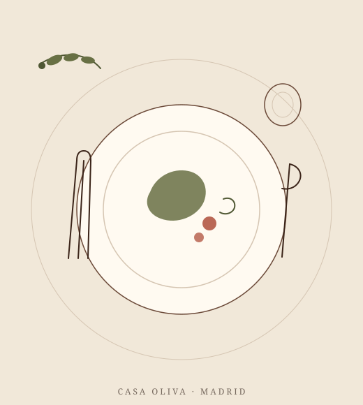

COCINA MEDITERRÁNEA · PRODUCTO LOCALSabores que se
Sabores que se
disfrutan sin prisa.
Una experiencia cálida alrededor del buen producto, recetas honestas y una mesa preparada para compartir.

Una mesa para quedarse un rato más.
Tradición mediterránea y una mirada contemporánea. Cada plato busca ser sencillo de entender y difícil de olvidar.
La carta
Descubre nuestros platos y pulsa sobre cualquiera para ver sus detalles.
→02Tu mesa
Elige fecha, hora y comensales y déjanos preparada tu mesa.
→03Grupos y eventos
¿Sois más de 8 o celebráis algo especial? Llámanos y lo preparamos a medida.
→